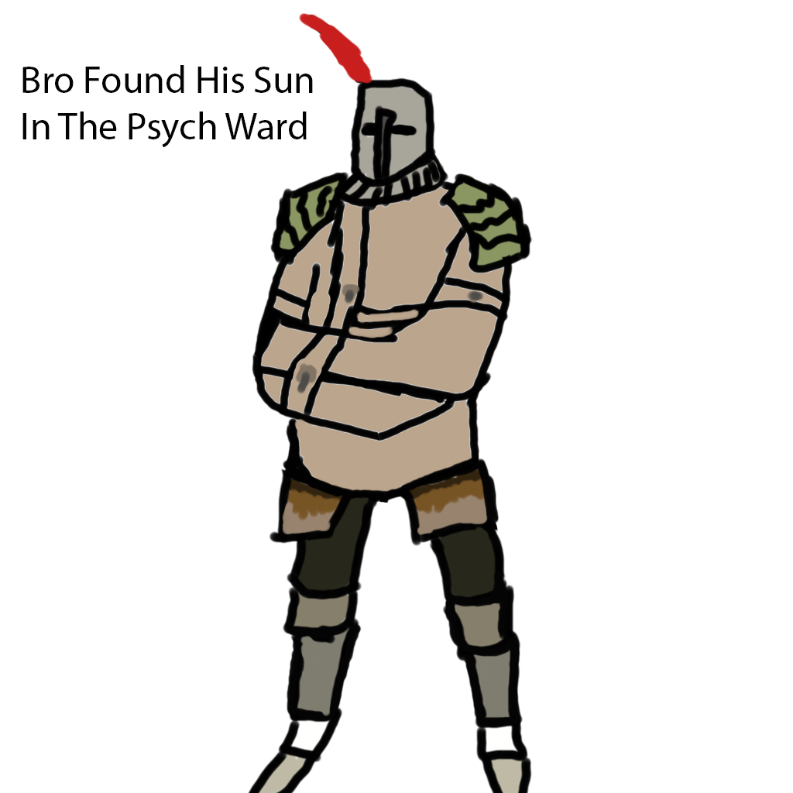

How the hell did Miyazaki get us to pay for this game again? I myself never played the first edition of Darksouls on my PS3, if I did Im sure I would have been sent to a psych ward rather than enjoying my childhood.
I remember opening the game on the first day I got it. It was not a traditional gaming experience. You see, typically after you buy that one game at gamestop and came home to play it and were just enthralled with the game/graphics, not me. I opened the game, my friend on in the voice call, and said something to the effect "This is the remaster?" Indeed it was the remaster and I did buy the right version of the game.
I would also consider myself a connoisseur in gaming having gamed most of my life. Let me tell you, this is not a remaster: Miyazaki got us again. From software has this idea I like to call a "money printer", basically you just release a game to PC and the money comes rolling in, despite being able to do this, bloodborne still has no PC port, but as you could probably tell Darksouls remaster fits the description of a "money printer"
Miyazaki is a vengeful god, and his creative works make gamers such as my self cry at the thought of running a marathon to fight a boss. Only after running for 2 minutes in full platemail towards an area filled to the brim with enemies will you realize that maybe nostalgia is stronger than your will to play Darksouls, alas you push onwards cause surely the boss will be the pinicle of game design. Come to find out nothing in the Lost Izalath is worth fighting for.
As you lose spiral down, wife gone, children taken, then and only then will you realize it didn't have to be this way. I was thriving, living day by day until I got to the undead burg, that place can go to hell and the dogs with it. On my way to Carpa Demon Im first jumped by 3 dogs, this would be fine if it was any other game because only from software has the balls to ruin the bond between man and his best friend. Day ruined but it cant get worse right? I push forward. I then get jumped by 3 bandits -- it's getting real -- Im stuck in a tight corridor so my weapon is practically useless, but again I push on only to find 3 more bandits. My despaire grows but I know it cant be all bad because plenty of people love this game. I was sorely mistaken, Darksouls players live for pain and dont have jobs -- I cant say either of these attributes apply to me. Well once I kill those bandits there are a few more, so I run past them because my time and sanity are wearing thin. But get this, remember the thin hall? Remember how there were dogs? Turns out Satan had a role in Darksouls -- level design, there were 3 more dogs which trapped me in a love affair between their jaws and my balls.

The story doesn't end here, in fact, the fun has only begun. Satan is japanese and he works at from software.
So a few more run backs through the average california hood and I get to the fog wall. I walked into the room and guess who I see? Thats right, 3 more dogs -- God has clearly abandoned us and Darksouls only pushes you further from God's grace. By now the typical gamer has 2 modes which will reveal themselves naturally: Shinji Pose, and out right digital violence, a lucky few are bipolar enough to experience both in the same run back.
I will kill the first person who mentions the Tomb of Giants. I couldn't even tell you who made this because even Satan has his limit, if your lucky, you save solaire and get the hat -- for the rest of you lets all gang up on Patches and breach his skull with a hydrolic press. If by now you have found pleasure in the pain -- that's great because after this vasectomy inducing area you have a whole other game waiting for you: Darksouls 2!
"You know what would be better than normal enemies? Enemies that can hit you and not be hit in return". New Londo Ruins can suck my balls, Im here to have fun not hunt ghosts. Dont get me wrong it was a great idea in theory, but they must have thought that we cant have anything nice. The ghosts aren't even hot, for a lead designer who loves toes, the least he could have given us was make the ghosts hot.
The game itself isn't bad, but it is not peak like Darksouls 3 is. Dont get me wrong sometimes we need struggle in our lives to keep it interesting, but did they really have to make the Bed of Chaos, Centipede Demon, And whatever that thing was up in the cliffs of the demon ruins?
I think its safe to say that Solaire is the only reason I've kept going, he's such a lad. Do yourself the favor and save him before its to late.